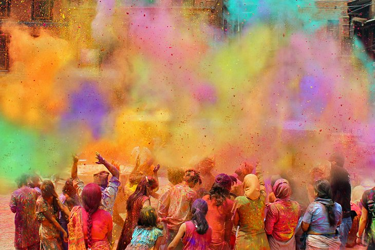
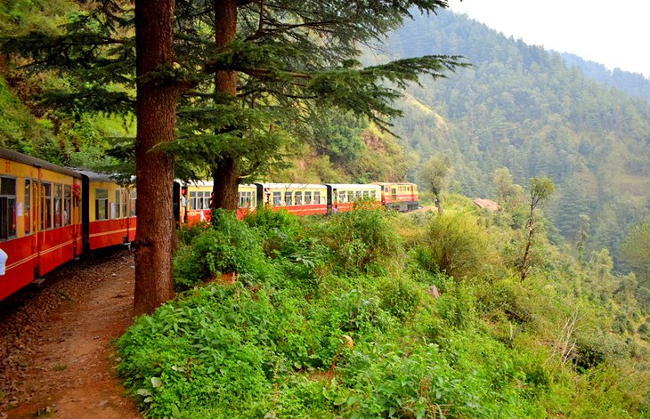
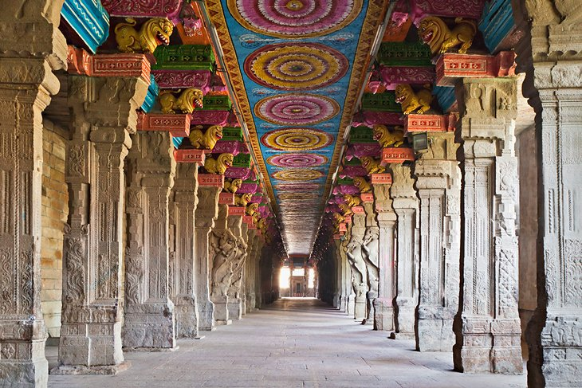

1. Taj Mahal, Agra

Few structures anywhere on the planet can be considered as romantic as the Taj Mahal in Agra. Built by an emperor in the 1600s as the final resting place of his favorite wife, this beautiful white marble edifice stands as a testament to love and makes for an incredible photograph.
2. Kapaleeshwarar Temple, Chennai

India is a land of temples, all just begging to be photographed. One of the most beautiful is the Kapaleeshwarar Temple in Chennai, a colorful Hindu temple dedicated to the god Shiva. This picture, which shows just a portion of the complex, is of the temple entrance.
3. Holi: Festival of Colors
As this picture shows, India's Holi Festival is certainly a colorful affair. Held each spring, this important Hindu celebration can trace its roots back centuries and provides an incredible backdrop for superb photos of the country's rich culture and traditions.
4. Gateway of India, Mumbai

Located at the water's edge in downtown Mumbai, the 26-meter-tall Gateway of India was erected in 1911 as a tribute to the British monarchy. A meeting place for locals and visitors alike, this spectacular structure is one of the city's most photographed landmarks.
5. The Ganges River, Varanasi

India has long been influenced by its mighty rivers. Shown here passing through the city of Varanasi, the spectacular 2,525-kilometer-long Ganges river is also an important religious site and is much revered.
6. Cola Beach, Goa

Located on the country's west coast, Goa is home to numerous fine beaches and has a reputation as a popular resort destination. Of the many beaches here, Cola Beach is one of the best places to snap a photo at sunset.
7. Bada Bagh, Jaisalmer

Once a royal garden, Bada Bagh - part of the magnificent Golden City in Jaisalmer - contains the cenotaphs of a variety of regional rulers' bygone days. For the best photos, be sure to frame these beautiful red sandstone buildings with the greenery of the surrounding mango groves.
8. Tea Plantations

Long a staple of the country's economy - and one of the reasons why it was for so long a part of the British Empire - India's tea-growing regions provide an attractive subject for photos. These tea plantations in Munnar are typical of the kind of images you'll be able to capture when you venture out of the city.
9. Train Rides
One of the best ways to get around India is via train. It's also a fun way to discover exciting new photo opportunities, especially in mountainous regions of the country, such as Shimla in the Himalayan foothills.
10. Meenakshi Amman Temple, Madurai
India's temples and shrines also provide spectacular interior photography opportunities, too. Here, the camera has captured the majesty of the towering columns and brightly painted ceilings of the Meenakshi Amman Temple in Madurai.